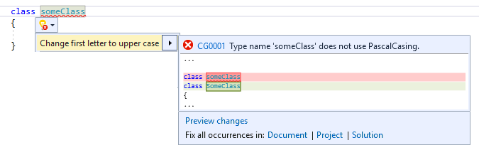
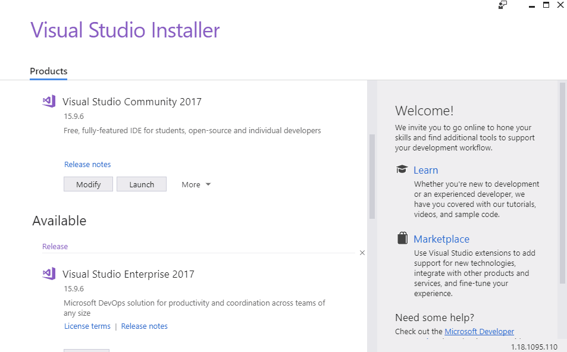
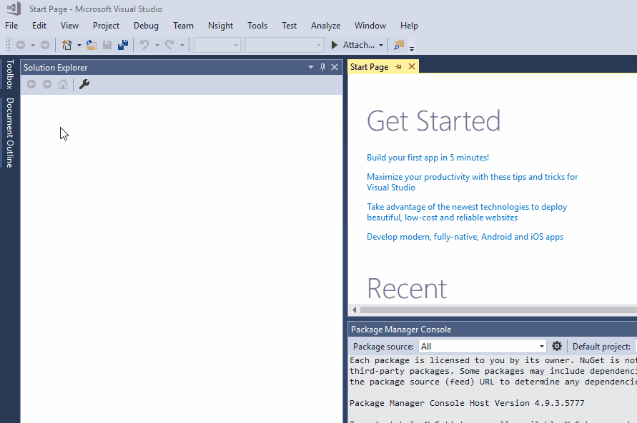
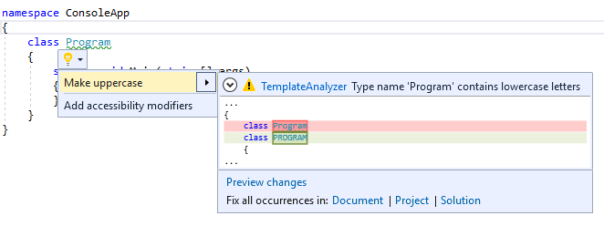
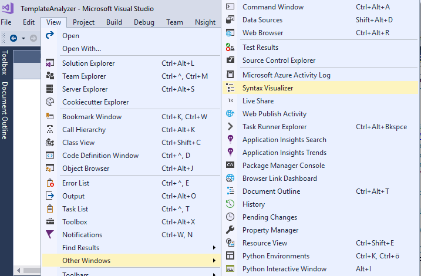
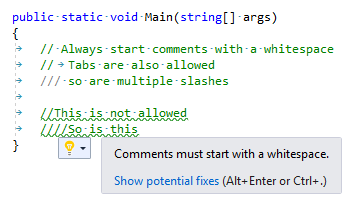
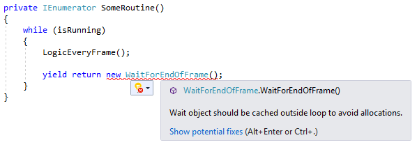
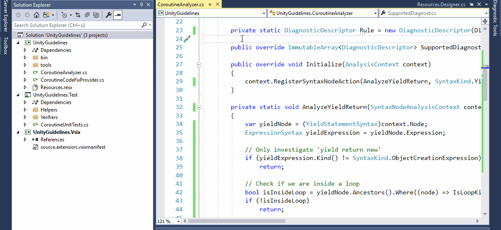
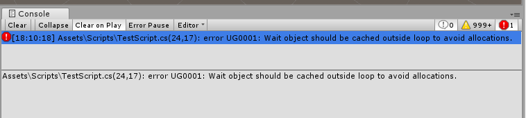

Code your Coding Guidelines
-
Roslyn Analyzers and how to use them with Unity
26.02.2019 - Samuel Arzt
This post serves as a basic introduction to Roslyn Analyzers for analyzing C# code and how to integrate them with the Unity game engine. In particular, one Analyzer for enforcing coding guidelines, as well as another Analyzer for spotting a common Unity pitfall, are explained.
Roslyn Analyzers
Analyzers are a great way to enforce certain standards in your codebase, or to easily and reliably spot common mistakes and pitfalls. They allow you to write extensions for Visual Studio, which analyze code at the moment you are writing it and report  Visual Studio errors, warnings or messages based on the rules you define. Furthermore you can create custom Code-Fixes, which provide an easy way to automatically resolve spotted errors in an instant.
The best part of it all is that the entire code for analyzing can be written in C#, since Analyzers build on the .NET Compiler Platform Roslyn.
Setup for Analyzer Development
Visual Studio already provides a very helpful template-project in order to get started with Analyzer development, as well as some other helpful tools for visualizing how the Roslyn Compiler-API works. However, these tools have to be explicitly installed. To do so, open the Visual Studio Installer (assuming Visual Studio 2017 is already installed) and modify your installation to add the .NET Compiler Platform SDK under Visual Studio Extension Development:
Template Project
The Analyzer template provided by Visual Studio is a great starting point for getting to know Roslyn Analyzers. In order to create a new project from the template, click File -> New -> Project... and choose the Analyzer with Code Fix template from the Visual C# drop down:

This will create a solution with three sub-projects: The Analyzer itself, a project for unit-tests and a Vsix project, which is used to run / debug the Anaylzer.
The Analyzer template is an implementation of an Analyzer and Code Fix which enforce all typenames to solely consist of all upper-case letters. While the practical value of such an Analyzer may be debatable, its code is a simple demonstration and can be used as a good starting point for your own Analyzer.
Run and Debug
In order to run / debug the Analyzer, simply run the *.Vsix project, which will start another instance of Visual Studio with your Analyzer installed. Here you can open an existing project or create a new project to test the Analyzer's functionality.  The template Analyzer will report a warning for all typenames with lower case letters. You can also test the Code Fix by clicking on the light-bulb icon, or with the 'Ctrl + .' shortcut, while your caret is positioned on the erroneous code-part. You can also debug and place breakpoints in your Analyzer solution (in the original instance of Visual Studio) as usual.
Analyzer Implementation
Now let's have a closer look at how the template Analyzer is implemented. The Analyzer sub-project already has two C# files. <SolutionName>Analyzer.cs implements the actual Analyzer, which reports the warning and <SolutionName>CodeFixProvider.cs implements the Code Fix for automatically fixing the reported warning. Generally it is good practice to also implement a Code Fix Provider for every Analyzer, if possible.
The Analyzer file first defines a lot of constants, such as the title, message and description of the Analyzer which will be displayed in Visual Studio. Here you can also define the severity, i.e. Error, Warning, Info or Hidden, of the Analyzer. However, the most interesting code-parts are the Initialize and AnalyzeSymbol methods below.
[DiagnosticAnalyzer(LanguageNames.CSharp)]
public class TemplateAnalyzer : DiagnosticAnalyzer
{
...
public override void Initialize(AnalysisContext context)
{
context.RegisterSymbolAction(AnalyzeSymbol, SymbolKind.NamedType);
}
private static void AnalyzeSymbol(SymbolAnalysisContext context)
{
var namedTypeSymbol = (INamedTypeSymbol)context.Symbol;
// Find just those named type symbols with names containing lowercase letters.
if (namedTypeSymbol.Name.ToCharArray().Any(char.IsLower))
{
// For all such symbols, produce a diagnostic.
var diagnostic = Diagnostic.Create(Rule, namedTypeSymbol.Locations[0], namedTypeSymbol.Name);
context.ReportDiagnostic(diagnostic);
}
}
}
The Initialize method is overridden from the DiagnosticAnalyzer base class and can be used to register a callback method to be called whenever the compiler encounters specific symbols or syntax nodes (more on that later). In this case, on line 31, the method AnalyzeSymbol is registered to be called whenever the compiler encounters a symbol of the NamedType kind, e.g. a class or struct identifier.
AnalyzeSymbol will then check if any character of the typename is lower case (line 39) and report a warning at the symbol's code-location if the condition is met (line 42 / 44).
That's it! Essentially only 5 lines of actual code are enough for this simple Analyzer to work. More complex Analyzers will obviously require a bit more code, however you will probably still be surpised at how easy it is to create more practical Analyzers.
Syntax Trees and Semantic Model
There is a lot more depth to the things you can do with the Roslyn Compiler API. As a starting point it can be helpful to understand the difference between the syntactical level and the semantic model of code analysis. Actions, such as the AnalyzeSymbol method above, may be subscribed to events on both the syntactical level as well as the semantic model.
In simplified terms, the syntactical level purely deals with the syntax tree of the code you are analyzing. Callbacks registered to the syntactical level are executed when parsing of the code document was completed. At this point we can identify declarations, invocations and so on, but we are not able to track down references to these Syntax Nodes or other semantic information about them, like the base class of a type .
The semantic model on the other hand is able to answer these questions. However, as you might have guessed, it is typically more expensive to query the semantic model, than a syntax tree.
In order to be able to better understand the syntactical level, the .NET Compiler Platform SDK provides a very helpful tool,

called the Syntax Visualizer. The Syntax Visualizer window can be used to visualize the syntax tree of the code document you are currently writing.
You can open it under View -> Other Windows -> Syntax Visualizer.
The Window will automatically expand and select the node corresponding to the code element currently under your caret. In the screenshot below for example, you can see that single line code comments are parsed by Roslyn as a leading SingleLineCommentTrivia as a child of the CloseBraceToken (i.e. the '}' of SomeMethod on line 13). This kind of visualization can be very helpful, when you are trying to find a way to access specific Syntax Nodes for your Analyzer and can give you a hint on how to best navigate the syntax tree in order to reliably find the nodes you are after.
Code Fix Implementation
Now that we have a basic understanding of how the Analyzer works, let's also have a look at how the Code Fix is implemented. Code Fixes allow you to define how code parts could be automatically adapted in order to resolve issues reported by an Analyzer.
First of all, the Code Fix Provider of our template defines which Analyzers it provides a fix for, by overriding the FixableDiagnosticIds property of the CodeFixProvider base class and simply returning the DiagnosticId of the corresponding Analyzer:
[ExportCodeFixProvider(LanguageNames.CSharp), Shared] public class TemplateCodeFixProvider : CodeFixProvider { ... public override ImmutableArrayFixableDiagnosticIds { get { return ImmutableArray.Create(TemplateAnalyzer.DiagnosticId); } } ... }
Again, the more interesting code-parts are situated in the methods further down below. The method RegisterCodeFixesAsync will be called whenever a code fix for a DiagnosticId of this Code Fix Provider is requested and must be overriden to provide our custom Code Fix:
... public override async Task RegisterCodeFixesAsync(CodeFixContext context) { var root = await context.Document.GetSyntaxRootAsync(context.CancellationToken); var diagnostic = context.Diagnostics.First(); var diagnosticSpan = diagnostic.Location.SourceSpan; // Find the type declaration identified by the diagnostic. var declaration = root.FindToken(diagnosticSpan.Start).Parent.AncestorsAndSelf() .OfType<TypeDeclarationSyntax>().First(); // Register a code action that will invoke the fix. context.RegisterCodeFix( CodeAction.Create( title: title, createChangedSolution: c => MakeUppercaseAsync(context.Document, declaration, c), equivalenceKey: title), diagnostic); } ...
Since we are at the syntactical level here and only have the location of where the diagnostic was reported, a bit more work has to be done than in the Analyzer, in order to find the correct node / symbol. To do so, we navigate from the syntax tree root to the TypeDeclarationSyntax node located at the start of the diagnostic location (lines 35 to 42). Next, the method MakeUppercaseAsync is registered as a code fix action:
... private async TaskMakeUppercaseAsync(Document document, TypeDeclarationSyntax typeDecl, CancellationToken cancellationToken) { // Compute new uppercase name. var identifierToken = typeDecl.Identifier; var newName = identifierToken.Text.ToUpperInvariant(); // Get the symbol representing the type to be renamed. var semanticModel = await document.GetSemanticModelAsync(cancellationToken); var typeSymbol = semanticModel.GetDeclaredSymbol(typeDecl, cancellationToken); // Produce a new solution that has all references to that type renamed, including the declaration. var originalSolution = document.Project.Solution; var optionSet = originalSolution.Workspace.Options; var newSolution = await Renamer.RenameSymbolAsync(document.Project.Solution, typeSymbol, newName, optionSet, cancellationToken); // Return the new solution with the now-uppercase type name. return newSolution; } ...
This method first creates the all upper-case name string and then gets the type symbol from the semantic model, in order to be able to rename all its references in the entire solution (lines 55 to 61). Renaming a symbol can easily be done using the Renamer class provided by the CodeAnalysis namespace (lines 63 to 66). Finally the new solution with the renamed type is returned.
That's all there is to this simple template Analyzer / Code Fix pair. I highly encourage you to place your own breakpoints to get a feel for when specific code parts get executed and what their context variables contain. However, the best way to get used to how Analyzers work is probably to simply start writing your own.
Examples
Now that we understand how simple Analyzers and Code Fix Providers work, let's have a look at some examples that might actually be useful in practical applications.
Enforcing Coding Guidelines
A very good way of practicing to write Analyzers is to automatically enforce your coding guidelines. Nonetheless you should keep in mind that writing Analyzers just to enforce simple coding guidelines might be a bit of an overkill. You could for example also use Visual Studio's built-in coding guidelines options. However, these can't easily be shared with your team. An editorconfig file can be shared and version controlled, in order to ensure your whole team follows the same guidelines, but can be a real pain to configure or sometimes fail to break the build when you want them to. If you simply want to practice, or for more complex guidelines, Analyzers are the way to go though.
One example would be to enforce the coding guideline of starting single line comments with a whitespace. So let's have a look at how an Analyzer for this cause could be implemented. Again, we are looking at the Initialize method and the Action that is subscribed in it:
[DiagnosticAnalyzer(LanguageNames.CSharp)] public class CommentAnalyzer : DiagnosticAnalyzer { ... public override void Initialize(AnalysisContext context) { context.RegisterSyntaxTreeAction(AnalyzeComment); } private void AnalyzeComment(SyntaxTreeAnalysisContext context) { SyntaxNode root = context.Tree.GetRoot(context.CancellationToken); IEnumerable<SyntaxTrivia> commentNodes = root.DescendantTrivia().Where((node) => node.IsKind(SyntaxKind.SingleLineCommentTrivia)); if (commentNodes != null) { foreach (SyntaxTrivia node in commentNodes) { CheckWhiteSpaceRuleViolation(context, node); } } } ... }
This time we will subscribe our analyzing method directly as a SyntaxTreeAction (line 39), i.e. at the syntactical level. Every time parsing the code document completed, AnalyzeComment will be called and we look through the Syntax Tree for SyntaxTrivia nodes of kind SingeLineCommentTrivia (lines 44/45) and check their properties for our rule (line 51).
... private void CheckWhiteSpaceRuleViolation(SyntaxTreeAnalysisContext context, SyntaxTrivia node) { string comment = node.ToString(); int whiteSpaceIndex = GetDesiredWhiteSpacePosition(comment); if (whiteSpaceIndex >= comment.Length) return; if (comment[whiteSpaceIndex] != ' ' && comment[whiteSpaceIndex] != '\t') context.ReportDiagnostic(Diagnostic.Create(whitespaceRule, node.GetLocation())); } internal static int GetDesiredWhiteSpacePosition(string comment) { int i = 2; while (i < comment.Length && comment[i] == '/') i++; return i; } ...
The rest of the analysis consists of basic string manipulation. Inside the method CheckWhiteSpaceRuleViolation  we check the string of the comment to start with a whitespace, with some special cases in mind, such as allowing for more than two slashes (see method GetDesiredWhiteSpacePosition starting at line 67) and also allowing for tabs instead of a whitespace (line 63).
Now let's also have a quick look at how a Code Fix Provider for this Analyzer could be implemented. First we register our Code Fix Action by finding the correct SyntaxTrivia corresponding to our diagnostic again:
[ExportCodeFixProvider(LanguageNames.CSharp), Shared] public class CommentCodeFix : CodeFixProvider { ... public override async Task RegisterCodeFixesAsync(CodeFixContext context) { SyntaxNode root = await context.Document.GetSyntaxRootAsync(context.CancellationToken); Diagnostic diagnostic = context.Diagnostics.First(); TextSpan diagnosticSpan = diagnostic.Location.SourceSpan; SyntaxTrivia comment = root.FindTrivia(diagnosticSpan.Start, findInsideTrivia: true); context.RegisterCodeFix( CodeAction.Create( title: title, createChangedDocument: c => InsertWhitespaceInComment(context.Document, root, comment, c), equivalenceKey: title), diagnostic); } ... }
After that, fixing the actual comment is quite simple:
... private async Task<Document> InsertWhitespaceInComment(Document document, SyntaxNode root, SyntaxTrivia comment, CancellationToken cancellationToken) { // Produce new comment string oldCommentContent = comment.ToString(); string newCommentContent = oldCommentContent.Insert( CommentAnalyzer.GetDesiredWhiteSpacePosition(oldCommentContent), " "); SyntaxTrivia newComment = SyntaxFactory.Comment(newCommentContent); // Produce new document with new comment in it SyntaxNode newRoot = root.ReplaceTrivia(comment, newComment); return document.WithSyntaxRoot(newRoot); } ...
We simply insert a whitespace character into the comment at the position defined by the method we already used in the Analyzer and create a new SyntaxTrivia node with the new comment string using the SyntaxFactory (lines 51-55). Finally we return a new code document with a tree where we replaced the comment trivia (lines 57-59).
Analyzer for Unity Coroutines
Let's have a look at another example of a more complex Analyzer. A common Unity pitfall, especially for developers who just started looking into Coroutines, is yield returning new Wait Instructions inside a loop instead of caching the object instance outside the loop to avoid GC allocations every loop. This might not impact your FPS immediately but can cause nasty GC spikes. Anyhow, it is very simple to fix. So let's try to implement an Analyzer for automatically detecting this scenario:
[DiagnosticAnalyzer(LanguageNames.CSharp)] public class CoroutineAnalyzer : DiagnosticAnalyzer { ... public override void Initialize(AnalysisContext context) { context.RegisterSyntaxNodeAction(AnalyzeYieldReturn, SyntaxKind.YieldReturnStatement); } private static void AnalyzeYieldReturn(SyntaxNodeAnalysisContext context) { var yieldNode = (YieldStatementSyntax)context.Node; ExpressionSyntax yieldExpression = yieldNode.Expression; // Only investigate 'yield return new' if (yieldExpression.Kind() != SyntaxKind.ObjectCreationExpression) return; // Check if we are inside a loop bool isInsideLoop = yieldNode.Ancestors().Where((node) => IsLoopKind(node.Kind())).Any(); if (!isInsideLoop) return; // Get created type var creationExpression = (ObjectCreationExpressionSyntax)yieldExpression; TypeSyntax createdType = creationExpression.Type; // Get TypeSymbol from semantic model, in order to be able to investigate inheritance tree var symbol = (INamedTypeSymbol)context.SemanticModel.GetSymbolInfo(createdType).Symbol; if (IsWaitInstruction(symbol)) context.ReportDiagnostic(Diagnostic.Create(Rule, yieldExpression.GetLocation())); } private static bool IsLoopKind(SyntaxKind kind) { return kind == SyntaxKind.WhileStatement || kind == SyntaxKind.ForStatement || kind == SyntaxKind.ForEachStatement; } ... }
This time we register an Action for whenever a Node of kind YieldReturnStatement is parsed (line 20). Inside the action, we check three conditions which have to apply in order for our diagnostic to be reported: the yield statement has to be an ObjectCreationExpression, i.e. a 'yield return new' (lines 25-30), the statement has to be inside any kind of loop (lines 32-35), and the type created by the expression has to be some sort of Wait instruction.
Detecting the ObjectCreationExpression is rather straight-forward. We can detect whether a node is inside a loop by checking the kind of its ancestor nodes in the Syntax Tree, since nodes inside a loop will become descendant nodes of the loop node (the Syntax Visualizer is very helpful here).
Finally, let's look at how we can detect whether the type created by the yield expression is actually a Wait instruction:
... private static bool IsWaitInstruction(INamedTypeSymbol symbol) { var qualifiedNameFormat = new SymbolDisplayFormat( typeQualificationStyle: SymbolDisplayTypeQualificationStyle.NameAndContainingTypesAndNamespaces); while (symbol.BaseType != null) { string baseTypeQualifiedName = symbol.BaseType.ToDisplayString(qualifiedNameFormat); if (baseTypeQualifiedName == "UnityEngine.YieldInstruction") { // We don't want to report diagnostics for returning new Coroutines string symbolQualifiedName = symbol.ToDisplayString(qualifiedNameFormat); if (symbolQualifiedName == "UnityEngine.Coroutine") return false; else return true; } else if (baseTypeQualifiedName == "UnityEngine.CustomYieldInstruction") { return true; } // Traverse down inheritance tree symbol = symbol.BaseType; } return false; } ...
Here we simply traverse the inheritance tree to check whether the created type is a descendant of the YieldInstruction class in any form, by comparing the qualified name of the type's base types with the hard coded qualified name of YieldInstruction and CustomYieldInstruction.  There might be more reliable ways to check this, but this will definitely do for our use case for now.
Building / Shipping Analyzers
There are two different ways how you can actually integrate your own Analyzers into your projects: Vsix or NuGet.
Vsix - Visual Studio Integration Extension
The Vsix sub-project of the Analyzer template solution will create a *.vsix file, which you can double-click to install the Analyzer with your Visual Studio. This will install the Analyzer extension for your entire Visual Studio, i.e. the Analyzer will be run for all your projects.
NuGet Package
The normal Analyzer sub-project of the template solution is already set up to generate a NuGet Package as a *.nupkg file. You can either publicly publish the package via NuGet or, for internal or test purposes, you can also add a local package source folder to your NuGet Manager. NuGet enables you to install Analyzers for specific projects, instead of your whole Visual Studio installation and if you are working in a team, the package will automatically be installed for other team members as well.
One thing to look out for with NuGet packages is the version number, though. I recommend actually increasing the version number, even for internal or testing purposes, since NuGet might otherwise install a cached version instead of the newly built version. Alternatively, you can of course also simply delete your local cache folder.
In order to install a NuGet package or set up a local NuGet source folder, right click your solution -> Manage NuGet Packages for Solution... to open the NuGet Package Manager UI.
Using Analyzers with Unity
Since Unity uses a custom way to create Visual Studio solution- and project-files at runtime, using Analyzers in Unity projects requires a bit of extra work. If you install the Analyzer via NuGet Unity will delete the reference to the installed Analyzer from the project files every time it regenerates them, which happens quite often.
The most simple way to circumvent this is to either install the Analyzer via Vsix or to develop your C# scripts in a separate Visual Studio project as a Class Library and to only add the compiled library to the Unity Project. However, both of these methods have major drawbacks.
Fortunately, Unity also allows us to create scripts that are called every time the project files were regenerated. This way we can write a custom script which edits the newly generated *.csproj files to include the references to our Analyzers again. You can find a Gist of such a script on my GitHub page here.
Furthermore you can add a nuget.config file in your Unity project-folder, in order to define a custom installation directory like this:
<?xml version="1.0" encoding="utf-8"?>
<configuration>
<config>
<add key="repositoryPath" value=".\Assets\Nuget" />
</config>
</configuration>
If you do so, make sure to disable all platforms in the Unity Inspector for the Analyzer dlls, since we are adding them manually by script.
Finally, in order for your Analyzer messages to also get displayed in the Unity console, you can add a csc.rsp file, which adds the Analyzer to the compilation process (this requires the Scripting Runtime to be set to .NET 4.x equivalent in the ProjectSettings):
-a:<path/to/analyzer/>.dll
 The Gist linked above, will also automatically generate the appropriate csc file for you. At this point it might be a good idea to restart your Visual Studio and Unity instances. After all that, you should be able to test your Analyzer in Visual Studio and see the reported diagnostics in the Unity console as well.
Summary
Roslyn Analyzers are a great way to enforce your own custom code standards and to make your developer life easier. It is surprising how easy it is to create Analyzers even for complicated rules. Code Fixes can speed up your work process immensely by providing an automatic way to fix diagnostics, thus they are a must for most Analyzers.
Visual Studio provides helpful tools such as the Syntax Visualizer and template projects for developing Analyzers.
It is also possible to use Analyzers for your Unity projects. However, they require some additional setup steps, if you want to install them via NuGet, in order to share them with your team and use them on a per project basis.
Finally, I have to thank Jeff Fritz (@csharpfritz) for his live-streams and videos as part of the .NET Community. His videos on Roslyn Analyzers (particularly this one) were a great help and starting point for writing this post. So go follow him on Twitter and Twitch / YouTube, if you haven't already.
...and while you are there, you can follow me too: @SamuelArzt ...if you want to...